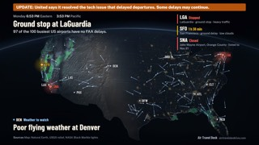

Latest FAA check
Checking the FAA's status page; if this stays blank see nasstatus.faa.gov
No FAA program does not guarantee your flight is on time: check your airline.
No match among the 100 busiest airports.
Delays and closures

LIVEOn air: delays read aloud
The FAA board on air, with a voice, around the clock.
- No FAA program listed
- Delay
- Ground stop or closure listed
Your airports
Airports you star or open show here. Saved in this browser only.
The 30 busiest US airports
We watch all 100 busiest airports, and the headline counts all 100. This board lists the 30 busiest plus any other airport with a listed FAA program. Trouble first, then traffic. Tap a row.
Changed in the last hour
The hourly readings load here.
Last 24 hours
How many of the 30 busiest were not clear, by hour
The hourly readings load here.
How busy travel is
Delayed? What you may be owed
Pick your airline and what happened. The guide shows what that airline has said it will do, what to ask at the counter before you pay for anything, and an email you can send afterwards.
Refunds are a separate rule, 14 CFR 260.6, and it applies whatever the cause of the delay or cancellation.
Check what you may be owed, or see what each airline has committed to. Plain-language help, not legal advice; the airline decides each claim.